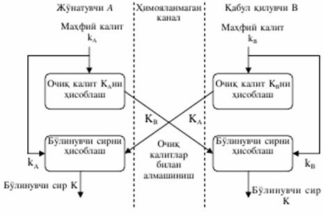

Асимметрик калитли алгоритмлар ёрдамида махфий алоқани ташкил қилиш протоколлари
Асимметрик калитли алгоритмларга асосланган идентификация протоколларида узатувчи томонларнинг махфий калитга эга эканлигини қуйидаги икки усул ёрдамида сезиш мумкин:
1. Унинг очик калити билан шифрланган суровни дешифрлаш оркали;
2. Суровномага узининг электрон ракамли имзо (ЭРИ) сини куйиш оркали.
Ушбу икки усулга қуйида батафсил тўхталамиз.
1 Биринчи усул учун шартли равишда қуйидаги белгилашларга келишилади:
h – бир томонли функция;
EA ва DA лар мос равишда А томон шифрлаш ва дешифрлаш алгоритмлари.
Усул ушбу протоколга асосланган:
1)
В А:
h(Z), B,
EA(Z,
B)
А:
h(Z), B,
EA(Z,
B)
2)
A B:
Z
B:
Z
бу ерда, Z – тасодифий сон, В – ушбу томон идентификация рақами.
В томон Z ни хосил қилади, h(Z) ни ва С=EA(Z, B) суровномани ҳисоблайди. Ўзининг хаконийлигини исбот қилувчи А томон, суровномани дешифрлайди ва хеш-функция қиймати ҳамда идентификатор ракамларининг тугрилигини текширади. Агар фаркни аникласа, у холда А томон дархол протоколни тўхтатади. Акс холда А томон Z ни В томонга узатади.
Агар А томондан қабул қилинган Z сони В томонга маълум бўлган сонга тенг бўлса, В томон А ни идентификациялайди.
2 Иккинчи усулни куриб чикиш учун ҳам шартли белгилашлар қабул қилинади:
ZA – А томон тасодифий сони;
tA – А томон вакт меткаси;
SA – А томоннинг электрон ракамли имзоси (ЭРИ).
ЭРИ ни текшириш алгоритми В томонга маълум деб хисобланади.
Усулни қуйидаги учта протокол мисолида кўриш мумкин.
1. Вакт меткасидан фойдаланиб бир томонлама идентификацияни таъминлаш.
1) А томон В га tA, В томон идентификацион раками ва уларга куйилган ЭРИни узатади
А В:
tA, B,
SA(tA, B)
В:
tA, B,
SA(tA, B)
2) В томон tA нинг белгиланган ораликда эканини, узининг идентификацион ракамининг мослигини ва ЭРИ тугрилигини текширади.
2. Тасодифий сондан фойдаланиб бир томонлама идентификацияни таъминлаш.
1) В томон ZВ тасодифий сонини А га узатади
В А: ZВ
А: ZВ
2) А томон сони қабул қилиб, кайта В га ушбуни узатади
А В: ZA, B, SA(ZA,
ZВ, B)
В: ZA, B, SA(ZA,
ZВ, B)
3) В томон идентификацион ракам мос келишини ва ЭРИни текширади.
3. Тасодифий сондан фойдаланиб узаро идентификацияни таъминлаш.
1) В томон А га ZВ ни узатади
В А: ZВ
А: ZВ
2) А томон ZA, ZВ ва B томон идентификацион ракамларини бирлаштириб ЭРИ куяди. Шунга ZA ва В идентификацион ракамни бирлаштириб B га узатади
А В:
ZA, B, SA(ZA, ZВ,
B)
В:
ZA, B, SA(ZA, ZВ,
B)
3) В томон ЭРИни текширади. У ZВ га ZA ни ва А томон идентификацион ракамини бирлаштириб ракамли имзо куяди. Имзога А томон идентификацион ракамини кушиб А га узатади
В А: А,
SВ(ZВ,
ZA, А)
А: А,
SВ(ZВ,
ZA, А)
4) А томон маълумотни қабул килгач, уз идентификацион ракамига кура, маълумот айнан унга узатилганлигини аниклайди. Сунг ЭРИни текширади. Натижага кура А томон В томон билан алока урнатганлигига ишонч хосил қилади.
Бу турдаги протоколлар умумий махфий маълумотдан фойдаланмаган холда сеанс калитини хосил қилиш имкониятини беради. Калитларни очик холда таксимловчи протоколларнинг узига хос хусусияти шундаки, хеч бир томон олдиндан калитнинг қийматини хисоблай олмайди. Чекли майдонда дискрет логарифмлаш масаласининг мураккаблигига асосланган биринчи шундай протокол 1976 йилда У. Диффи ва М. Хеллман томонидан тавсия этилди.
|
|
У. Диффи ва М.Хеллман томонидан кашф этилган калитларни очик таксимлаш усули фойдаланувчиларга калитларни химояланмаган алока каналлари оркали алмашишга имкон беради.
Диффи-Хеллманнинг калитларни очик таксимлаш схемаси:

Ахборот алмашинувида иштирок этувчи фойдаланувчилар А ва В мустакил равишда узларининг махфий калитларини kA ва kB ни генерация- лайдилар (kA ва kB калитлар фойдаланувчилар А ва В лар сир сакловчи тасодифий катта бутун сонлар).
Сунгра фойдаланувчи А узининг махфий калити kА асосида очик ка- литни хисоблайди:
КА=gKa (mod N)
Бир вактнинг узида фойдаланувчи В узининг махфий калити KB асосида очик калитни хисоблайди:
КВ=gKb (mod N)
Бу ерда N ва g катта бутун сонлар. Арифметик амаллар N нинг модулига келтириш оркали бажарилади. N ва g сонларни сир саклаш шарт эмас, чунки одатда, бу қийматлар тармок ва тизимдан фойдаланувчи- ларнинг барчаси учун умумий хисобланади.
Сунгра фойдаланувчилар А ва В узларининг очик калитларини химояланмаган канал оркали алмаштирадилар ва умумий махфий калити K ни (булинувчи сирни) хисоблашда ишлатадилар:
фойдаланувчи А: К = (КВ)КА (mod N) = (g KВ) КА (mod N)
фойдаланувчи В: К`= (КA)КB (mod N) = (g KA) КB (mod N)
бунда K = K`, чунки (g KВ) КА = (g KA) КB (mod N).
Шундай қилиб, ушбу амаллар натижасида иккала махфий калит kA ва kB ларнинг функцияси бўлган умумий махфий калити хосил қилинади.
Очик калитлар КА ва КВ қийматлари маълум бўлгани билан махфий калити К ни хисоблай олмайди, чунки махфий калитлар kA ва kВ қийматларини билмайди. Бир томонлама функциянинг ишлатилиши сабабли очик калитни хисоблаш амали кайтарилмайдиган амал, яъни абонентнинг очик калити қиймати буйича унинг махфий калитини хисоблаш мумкин эмас.
Диффи-Хеллман усулининг аҳамиятлиги шундан иборатки, абонентлар жуфти тармок оркали очик калитларни узатганларида факат узларига маълум махфий сонни олиш имкониятига эга. Сунгра абонентлар узатилаётган ахборотни маълум текширилган усулда олинган умумий сессия махфий калитидан фойдаланган холда, симметрик шифрлашни ишлатиб химоялашга киришишлари мумкин.
Диффи-Хеллман схемаси узатилаётган маълумотларнинг конфиден- циаллигини ва аутентлигини (аслига тугрилигини) комплекс химоялаш усулини ҳам амалга ошириш имконини беради. Алгоритм фойдаланувчига ракамли имзони ва симметрик шифрлашни бажаришда бир хил калитларни шакллантириш ва ишлатиш имконини беради.
Маълумотлар яхлитлигини ва конфиденциаллигини бир вактда химоялаш учун шифрлаш ва ЭРИдан комплекс фойдаланиш максадга мувофик хисобланади. Диффи-Хеллман схемаси ишлашининг оралик натижаларидан узатилаётган маълумотларнинг яхлитлигини ва конфиденциаллагини комплекс химоялаш усулини амалга оширишда фойдаланиш мумкин. Хакикатан, ушбу алгоритмга биноан фойдаланувчилар А ва В аввал узларининг махфий калитлари kA ва kB ни генерациялайдилар ва очик калитлари КA ва КB ни хисоблайдилар. Сунгра абонентлар А ва В бу оралик натижалардан маълумотларни симметрик шифрлашда фойдаланилиши мум- кин бўлган умумий булинувчи махфий калити К ни бир вактда хисоблаш учун ишлатади.
Узатилаётган маълумотларнинг конфиденциаллигини ва аутентилигини комплекс химоялаш усули қуйидаги схема буйича ишлайди:
- абонент А ракамли имзонинг стандарт алгоритмидан фойдаланиб, узининг махфий калити kA ёрдамида М маълумотга имзо чекади;
- абонент А узининг махфий калити kА ва абонент В нинг очик калити КВ дан Диффи-Хеллман алгоритми буйича умумий булинувчи махфий калити К ни хисоблайди;
- абонент А олинган узаро булинувчи махфий калитда алмашинув буйича шериги билан келишилган симметрик шифрлаш алгоритмидан фой- даланган холда М маълумотни шифрлайди;
- абонент В шифрланган М маълумотни олиши билан узининг махфий калити kB ва абонент А нинг очик калити КА дан Диффи-Хеллман алгоритми буйича узаро булинувчи махфий калит К ни хисоблайди;
- абонент В олинган М маълумотни калити К ёрдамида дешифрлайди;
- абонент В абонент А нинг очик калит КА ёрдамида дешифрланган М маълумотнинг имзосини текширади.